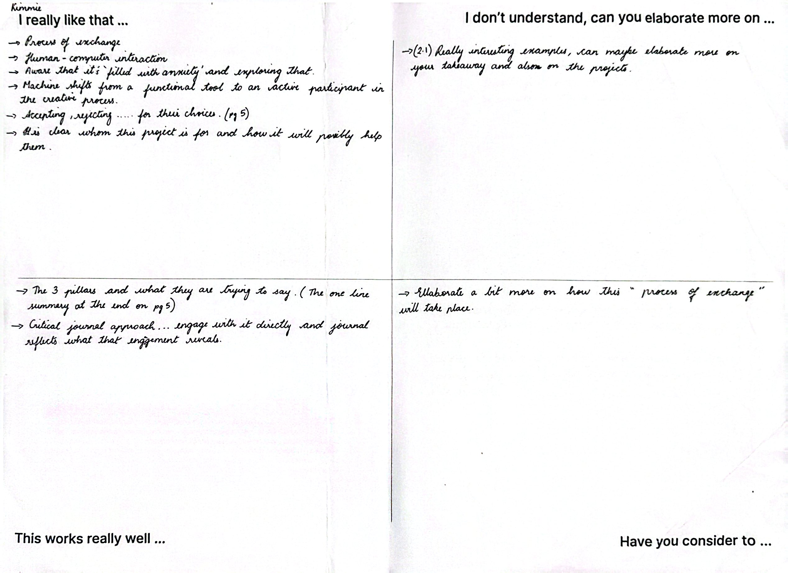
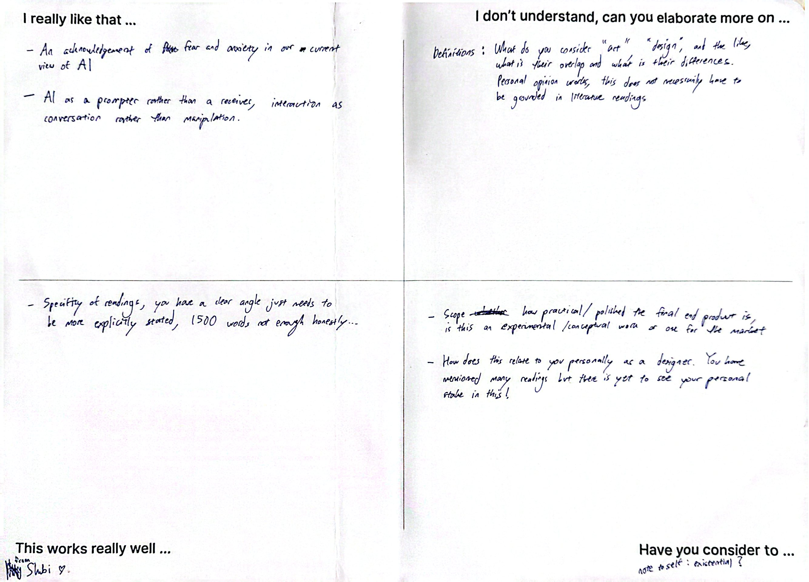
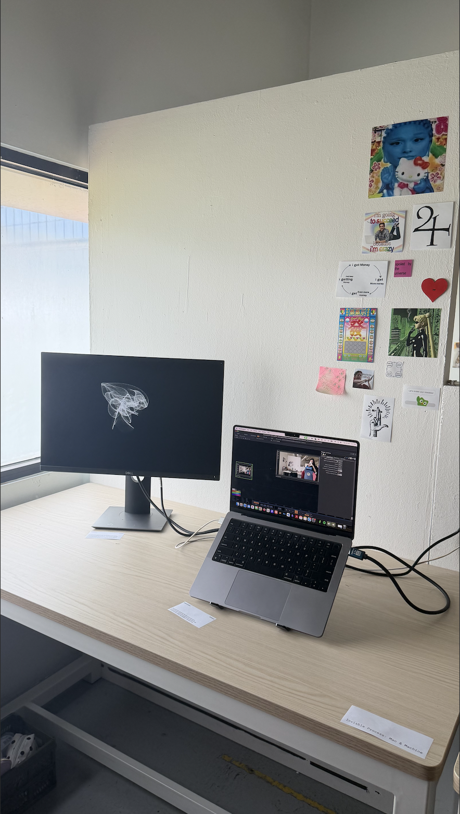
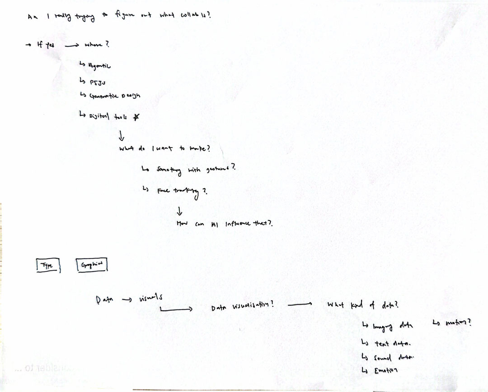

Week 6 · Semester 1
Feedback Loop
Trigger
RPO Peer Review
The peer review session was a huge reality check.
Hearing my classmates validate that they understood what I was trying to explore was a relief, but the feedback hit the exact same pain point: the overall scope is still way too big and vague for anyone to pinpoint what the core takeaway actually is. I've been floating in the conceptual space of "human-AI collaboration" without locking down the exact mechanics of the interaction. I need to stop skimming the surface and dive deeper into the actual nuance of what this process is.
My three project pillars are now locked to give this inquiry a firmer structural spine:
Interaction Design (focusing on HCI frameworks and human agency)
Creative Coding (using p5.js as the tangible testing ground)
AI-Assisted Creative Process (interrogating the friction, misinterpretation, and negotiation between human and machine)


RPO peer review feedback notes, and the redrawn mind map carried over from Week 5.
Designing the Table & Exhibition Setup
How do we help someone understand the process from start to end without dumping a wall of text on them?
During the feedback, a major question came up regarding the physical table setup for the exhibition. Right now, the experiments exist as isolated code sketches and screen interactions, but an outsider walking up to the table won't see the internal dialogue, the pushback, or the visual misinterpretations that happened along the way.

Table setup
Experiment 01
Understanding Feedback Loop
Basic Feedback Loop TouchDesigner.
Approach
I set up a basic, bare-bones feedback loop in TouchDesigner and applied a simple transform to it—moving the canvas along the x-axis with a Tile/Repeat operation.
Process & Observations
I deliberately stripped away any complex visuals or generative effects to break the feedback loop down to its absolute simplest form. I wanted to observe what a feedback loop actually means when stripped of fluff, and how that concept translates raw onto a computer screen.
Reflection
This was a purely sense-making exercise for me. Watching a frame repeatedly sample itself and step across the screen made the mechanics tangible. It wasn't about making a final visual piece; it was about grounding myself in seeing, in the simplest possible form, how a computer "understands" and processes recursion.
Experiment 02
Hand Tracking (Translating Gesture)
Hand tracking TouchDesigner.
Approach
To explore how a feedback loop looks and feels from the machine's perspective—in a way a human could actually perceive—I built a gesture-tracking system in TouchDesigner using computer vision.
Process & Observations
I mapped a pinch gesture to calculate the spatial distance between my fingers, using a second hand to trigger the next gesture state. I used the pinch's hold value to drive the visual output directly, narrowing down the control range so the interaction felt tighter. Because raw tracking data is inherently noisy, I ran the values through a lag and smoothing filter to soothe the constant jitter coming off the camera feed.
Reflection & Challenges
Even though I knew logically that the system wasn't "understanding" anything—just evaluating pixel matrices and coordinates—it felt like it understood what I meant.
I genuinely enjoyed the feeling of a machine reading my body language. That felt sense of responsiveness is the most compelling part of the interaction. Being able to see that response visualised in real time was what made the experiment interesting, rather than the raw tracking technology itself. This exact moment is what got me interested in working with physical gesture more seriously as a medium for machine dialogue.
Experiment 03
Noise Grid (Visualising Data Fields)
Noise grid particles plotted at Perlin noise values.
Approach
Instead of using Perlin noise the standard way—as an invisible force field to nudge or displace other objects—I used a particle system to physically plot where the noise values themselves sit in space.
Process & Observations
I wanted to render the noise field itself visible. By placing particles directly at the coordinate values of the noise function, I translated an abstract math function into a physical, structural grid on screen.
Reflection
I was curious how a raw string of floating-point numbers could translate into something physical I could actually look at. Seeing the data laid out in space allowed me to visualize and genuinely grasp what the computer was processing under the hood. The math stopped being an abstract black box and became a tangible landscape.
What I Now Think

Exploring Further
Looking across all three experiments, the single most compelling element was the real-time feedback loop—the instant visual reaction on screen, which is so easy to overlook when working with digital systems.
That immediacy is precisely what produced the sense of familiarity and connection I felt during the hand-tracking experiment. The instant response bridged the gap; it made the machine feel less like an unapproachable black box and more like a system meeting me halfway in space.
Feedback Breakdown — Andreas, "Meaning Finding"
My consultation with Andreas this week forced a hard pivot toward meaning-finding. He pushed me with a series of core questions: Why am I doing this? What counts as going deeper? What actually is a system? How do gesture and interaction differ? What does this do in terms of feeling and meaning? Where does this go next?
Sifting through those questions brought me back to a fundamental gap:
Why I'm doing this: There is a deep lack of mutual understanding between us and the machines we build. AI and algorithmic tools are permanently part of our design toolkit now, yet our day-to-day interactions with them still feel deeply awkward, clumsy, and misaligned.
Going deeper: For me, "going deeper" isn't about adding technological complexity—it collapses into solving that exact alignment problem. It's asking how we can interact with a machine meaningfully, maintain our own creative agency, and still achieve genuine co-creation rather than just delegation.
System vs. Gesture & Interaction: A system is the sandbox—the set of rules, boundaries, and logic we program for the machine to operate within. Gesture is the physical body moving through space, while interaction is the dialogue that happens when that physical movement meets the computer's digital boundary.
Feeling & Meaning: The emotional weight comes back to that sense of familiarity and connection I noticed in the hand-tracking test. When a machine responds fluently to human nuance, the friction softens into dialogue.
Pillar Shift — Comparing to the Earlier RPO Draft
Looking back at my earlier RPO draft alongside this week's pillars reveals where my thinking is actually shifting—and where I might just be slipping into shorthand.
Earlier RPO draft
Interaction Design: Designing the Exchange, and Who Gets to Design It
AI-Assisted Creativity: Two Ways an AI Collaborator Fails to Surprise You
Creative Practices: Tacit Judgment as the Actual Site of Friction
This week
Interaction Design
Creative Coding
AI-Assisted Creative Process
In the earlier draft, my three pillar titles were framed around critical friction and reflective practice. This week, my list looks much simpler on the surface.
The first pillar (Interaction Design) holds steady as the overarching HCI framework. The second (AI-Assisted Creative Process) is mostly wording drift rather than a fundamental pivot.
The real structural shift is in the third pillar: replacing Creative Practices (which was rooted in tacit human judgment and internal friction) with Creative Coding (a medium-and-tool framing). This shift toward "Creative Coding as Building Your Own System" is where my later RPO draft ultimately settles, but seeing it emerge here forces a necessary question:
Was this week where that pivot actually happened, or was "Creative Coding" just loose shorthand while the real inquiry underneath remained about tacit judgment?
Tracing my trajectory over the last few experiments points to a genuine shift in my focus. Moving through the TouchDesigner hand-tracking setup and the Perlin noise grid pulled me away from passively critiquing what the AI outputs. The physical act of building the pipeline—smoothing jittery input values, mapping particle grids, and structuring real-time feedback loops—made the architecture of the system itself far more compelling than simply evaluating the AI's "taste."
Rather than sitting back and judging a black-box agent, my interest has moved to constructing the sandbox—designing the exact rules, constraints, and feedback loops that govern how machine and human meet.
Key Takeaways & Synthesis
Shift from Critique to Construction: The friction isn't just happening inside my head as a perfectionist user (tacit judgment); it is physically encoded into the system parameters I write (creative coding).
System as the Site of Agency: Building my own code environments gives me the agency I felt was missing in the open-brief Gemini experiments.
Open Direction: As I head into the next phase, the core challenge remains: how to build a creative coding system tight enough to give clear feedback, yet open enough to allow for genuine, unexpected co-creation.
Moving Forward
I know now that I'm interested in gestures.
Moving into the next phase, I need to re-examine my RPO and restructure my current pillars to reflect that reality. But I'm still holding a set of fundamental questions open: What exactly am I interested in when it comes to gestures? Why gesture specifically, and how does it link back to my broader investigation of the man-and-machine process?